← 返回阅读库 · 原论文目录
论文讲解阅读文档 · 内容生成 · v002
DreamBooth: Fine Tuning Text-to-Image Diffusion Models for Subject-Driven Generation
视频时长 00:07:54；讲解文字 3,360 字符；提取讲解画面 18 张。按视频原顺序阅读，每段文字保留时间戳。
文字来自整段视频的自动语音转写，按自然停顿分段，并与 PPT / 论文页面 / 演示画面对齐。未将讲解压缩为摘要；术语、数字和口述公式请结合画面及原论文核对。 阅读稿已校正规范部分明确术语误识别；原始逐字稿和每处修改记录另行保留。
讲解画面为源视频截图（640×360），不是可编辑 PPT 文件。全片按每秒 2 帧扫描内容变化，逐步展开页保留；连续动画保留代表画面。清晰度受源视频限制。
下载完整资料包 · 含离线 HTML、PDF、Word、全部 PPT 画面和字幕。
原论文与材料
DreamBooth: Fine Tuning Text-to-Image Diffusion Models for Subject-Driven Generation · 下载完整 PDF（25 页）
按时间阅读
00:00:00–00:00:35 · 画面 001
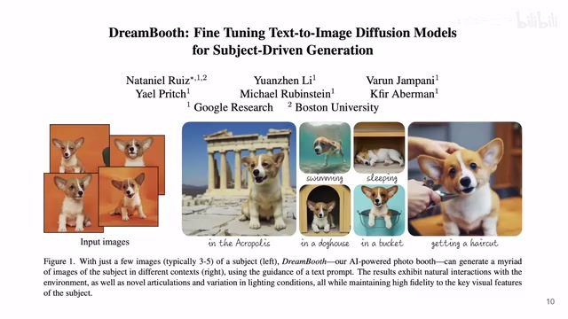
00:00:00–00:00:35 · 画面 001大家好啊今天我们来快速梳理一篇论文 DreamboostFuntuning Text-to-Image Diffusion Models for Subject-Driven Generation 这篇论文呢它的这个 formulation 很有意思就是说我输入几张相同的这个 subject 它的这个图片你可以看到这是同一只狗的这四张图片然后呢用这几张图片去训练我们的 diffusion model这样子让我们的 Diffuser Mode 可以生成一些针对就特定的这一只狗，针对它在各种情境下的，你可以看到这些图片都是生成的是一个非常有意思的应用，那么同理这个猫也是一样的。
00:00:35–00:00:38 · 画面 002
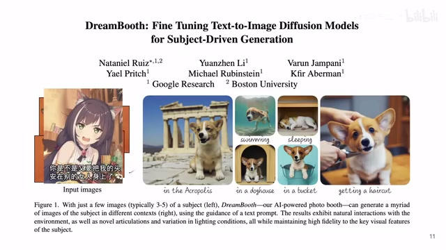
00:00:35–00:00:38 · 画面 002那么具体怎么做呢？我们来看到，首先我们一个快速的回顾 text to image diffusion model 图像生成的过程，我是从一开始的噪声不断的通过网络来降噪得到我们最终的图片，而我们降噪的网络它运行的过程中是 conditioned on text prompt 它的 embedding，也就是说我的一句话对吧，它被处理成一个 embedding 然后注入到降噪的过程中，那么本文想要研究的是我要生成一只特定的狗，特定的猫。
00:00:38–00:01:10 · 画面 003
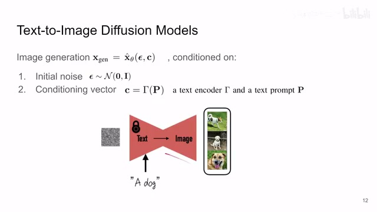
00:00:38–00:01:10 · 画面 003我希望对这个网络有更多的控制，那么当然最简单的方法呢就是我拿到这两三张狗的照片，搞两三张猫的照片，我直接去 fine-tune 我们的这个 model 嘛，那么当然为了以示区别对吧，你想要你的网络特定的知道你要生成这只狗，你要生成这只猫，你可能要加 prompt 来使这个特定的狗和其他的一般的类型的这种狗来做区分。
00:01:10–00:01:51 · 画面 004
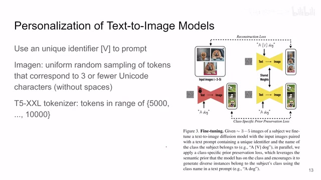
00:01:10–00:01:51 · 画面 004那么在这里呢，作者同样的用了相同的思路，就是说我前面我的这个文字前面我要生成的这个物体的它的前面我加一个特定的这个 token，那么这个 label 就是单纯的和你的输入的这几张图片来对应。那么你拿到这个图像和这个文本的对，然后你扔进你的网络去做 fine-tune 就可以了，但是呢直接 fine-tune 呢并不能给我们一个好的结果，那作者观察发现呢，你如果说直接去这样子你只用这几张图片，三到五张这么图片和这对应的这个 label 来去 fine-tune 的话，它会有两个很大的问题，第一个呢就是这个 language drifting，我们的网络可能只认识这只狗了而忘记其他的狗都是什么样子的。
00:01:51–00:03:51 · 画面 005
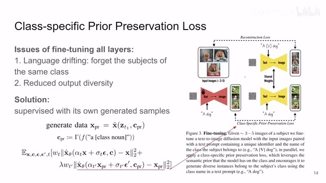
00:01:51–00:03:51 · 画面 005那么因为你 fine-tuning 的时候,你只看到了这些东西嘛,步子稍微大一点,它就把原来的狗的意思就给带偏了。那么第二个点呢,就是这个 diversity,也就是你生成的图像就没有多样性了,基本上就都是你输入图像的这个样子。那这个现象也不意外嘛,毕竟你看到的就是这些样本。那么怎么样解决这个问题呢?也就是本文的最大的贡献。
就是说我从数据集的角度，如果说我能拿到更加多样的图像的数据，我输入的图像我 fine-tune 的数据集让它变得更加多样，那是不是就可以规避上面这个问题呢？那么下面一个问题就变成了我怎么样能够拿到更多多样的图像呢？你手头不是正好有一个文字到图像的这么一个生成器，你直接去把你的生成的图像拿过来用就好了，所以本文作者就是说我先用一个一般性的这么一个 prompt，就是比如说我要生成特定这只狗的图像，我就先让我的网络去生成一些一般性质的狗有这么一些狗的图像，然后把这些狗的图像加入到我们图片的数据集里面。
那么你新加入的这些生成的图像是根据这样的 prompt 来生成的，你可以看到它只是指定了我这一个类，那么我们把这些图像叫做 prior，这是 prior 的文字的 condition，然后你这么做生成了这个就是 prior 的图像，那么现在你要做的就是把 prior image 和它对应的 label 和你真正的输入的 image 和它的 label 修改过的 label 一起交给我们的网络里面去 fine-tune。
那么看到这个 loss 前面是一个标准的 diffusion loss，那么你对你的这个输入的图片加噪声，然后 condition on 你的这个输入的这个 text 这个 c，然后你去尝试还原出你的输入这个图像，那么另一项就是我把我这个生成后的图像我就把它当成真实产生了这个图像的样本，那么我也给它加噪声，那么基于我们这个一般性质的这个 prompt 就是一般的
00:03:51–00:04:43 · 画面 006
00:03:51–00:04:43 · 画面 006这个文本然后呢给它恢复出原始的这些图像来，那这样子呢最后两个 loss 加起来就好了。那么它本质上其实就是你在针对这一只狗的图片做 fine-tune 的时候，你不能只针对这一只狗，你要用更多的狗的图片来扩充你的数据集，而你这些更多狗的图片呢正好来自于你这个图像生成的这个网络，这是一个很方便的事情。那么这个呢就是本文的主要的技术细节那么下面我们来看到作者的 evaluation，因为你的任务是相对比较新的，你要让人信服你必须要自己建一套去实验去评估它的体系。那么这个也是本文中另一个值得学习的地方。我们来看到它首先是收集了一个数据集，这个数据集里面有 30 个物体，其中 21 个是一般的物体，那么 9 个可能是宠物
00:04:43–00:05:25 · 画面 007
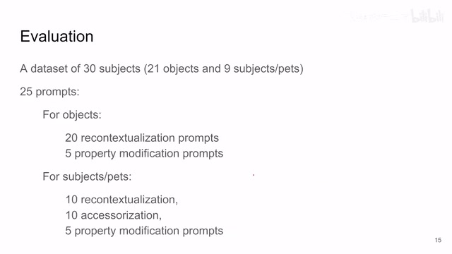
00:04:43–00:05:25 · 画面 007那么针对这些数据集呢，它有 25 个 prompt，因为它最终想要的是根据我输入的物体来生成这个输入的物体在其他各种 prompt 的情况下它的这个表现嘛。那么这些 prompt 就是你最终想要生成的这个图像的风格也好，这个环境的场景也好。那么这个是它的这个任务的空间
00:05:25–00:05:26 · 画面 008
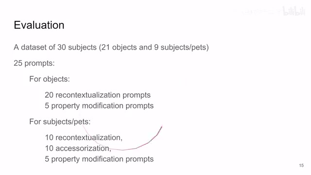
00:05:25–00:05:26 · 画面 00800:05:26–00:05:27 · 画面 009
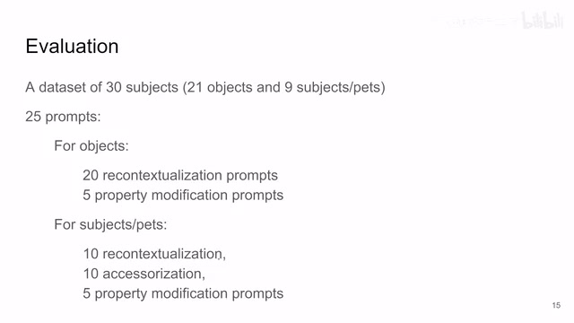
00:05:26–00:05:27 · 画面 009更关键的是我们要怎么样评测这个东西，那么这里作者主要关注的两个点，一个就是我生成的图像里面包不包含我之前的 subject，就是我输入的图像里面的东西能不能得到保留。那么作者用了两种方法，一个是 CLIP-I，就是用了 clip 的图像的 encoder 去计算生成图像和真实图像的
00:05:27–00:06:17 · 画面 010
00:05:27–00:06:17 · 画面 010他们这个 cos similarity，那么原理上跟 FID 是一样的。那当然你可以把 clip 的 image encoder 换成 dino，它的这个 encoder 也是一样的。那这个呢是关于 subject，那么还有这个 prompt for density，那就是说你生成的这个图像能不能跟我们的 prompt 复合，就是模型听不听话吗那么这里呢就是用了现成的 clip，你的图像生成的图像进到这个 image encoder，你的 prompt 进到 text encoder，然后看这个 similarity。那么你可以看到本文的方法呢，对吧，基于这个 imagegen 的，基于 stable diffusion 的，他们的这个性能都在这里列出来了。那对比的一个 base line 是这个 text for inversion，你可以看到这边有特定样例的这个对比
00:06:17–00:06:18 · 画面 011
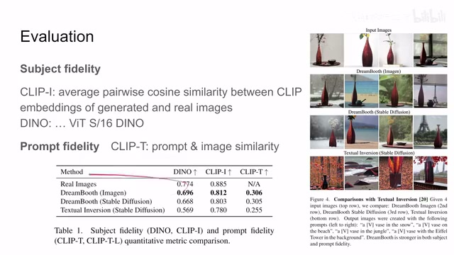
00:06:17–00:06:18 · 画面 01100:06:18–00:06:30 · 画面 012
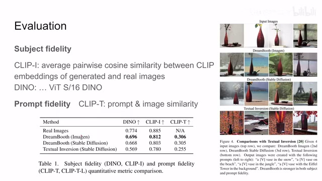
00:06:18–00:06:30 · 画面 01200:06:30–00:06:50 · 画面 013
00:06:30–00:06:50 · 画面 013那与此同时呢，作者还引入了这个 user preference，也就是他真的去请一些人来做问卷调查，让他们看到这个 reference image，也就是我输入的这个图像，然后呢再看到这个 prompt 和我们生成的图像来比较，说生成的图像哪个更能体现我们输入的这个图像，然后呢跟这个文本更加贴切。那么这些用户呢一边倒的认为说本文的方法它效果很好
00:06:50–00:06:51 · 画面 014
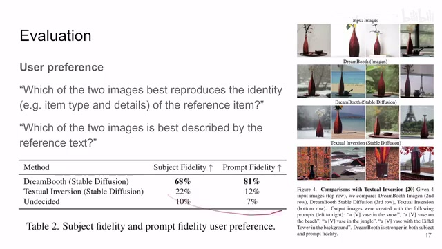
00:06:50–00:06:51 · 画面 01400:06:51–00:06:56 · 画面 015
00:06:51–00:06:56 · 画面 015那么这个是另一组实验，那剩下的我们再关注一下 ablation，主要就是说我为什么要那其实就是我们为什么要用模型生成的图像一起来加入训练，你直接看这个例子你就明白了。如果去掉了使用生成图像这个环节，你看到这个生成的图像呢长得都跟我们输入的图像其实差不多，它的 diversity 失去了很多。如果加上之后呢，这边生成的图像就变得很不一样了，当然这边有具体的这个 diversity 还有这个 prior preservation 这么一些比较
00:06:56–00:07:32 · 画面 016
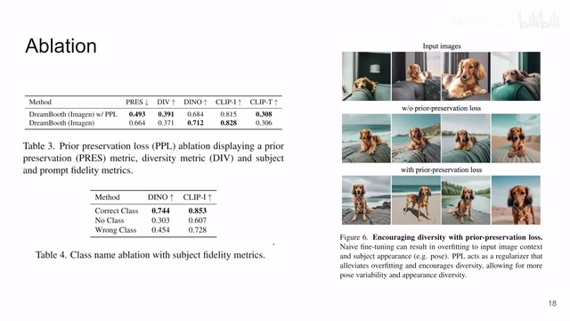
00:06:56–00:07:32 · 画面 016包括使用什么样的类的名字来生成你的这些额外的图像对它这个结果的影响，那么还是感兴趣的朋友呢，非常推荐你到原文查看。那么总的来说呢，本文就是使用我们已经有的这个 text-to-image 这个 model 来生成额外的数据，帮助它进行 fine-tune，在这个特定的任务上取得了有意思的结果。
00:07:32–00:07:53 · 画面 017
00:07:32–00:07:53 · 画面 017还是非常推荐感兴趣的朋友呢到原文查看它更多的这个样例啊实验的细节等等。那么以上呢就是我对这个论文的一个快速的整理，那么感谢您的收看，再见
00:07:53–00:07:54 · 画面 018
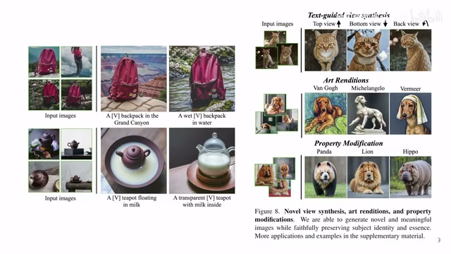
00:07:53–00:07:54 · 画面 018转写与来源说明 · 0 个自动复核提示
保留 21 个原始语音片段，0 个片段触发自动复核提示。提示仅用于定位可能的术语、重复或识别问题，不等于已确认错误。
讲解画面为源视频截图（640×360），不是可编辑 PPT 文件。全片按每秒 2 帧扫描内容变化，逐步展开页保留；连续动画保留代表画面。清晰度受源视频限制。
原视频：paper/合集_2026-10-16_内容生成/[论文简析]DreamBooth Fine Tuning Text-to-Image Diffusion Models...[2208.12242].mp4
SHA-256：026dc175fa0f516a7baab24a699b3a7940d34201a316dd06c96db38183f5c16a
全文按视频语音与画面制作。原论文可从上方链接下载；完整资料包保留全文、原始逐字稿、字幕和校对记录。